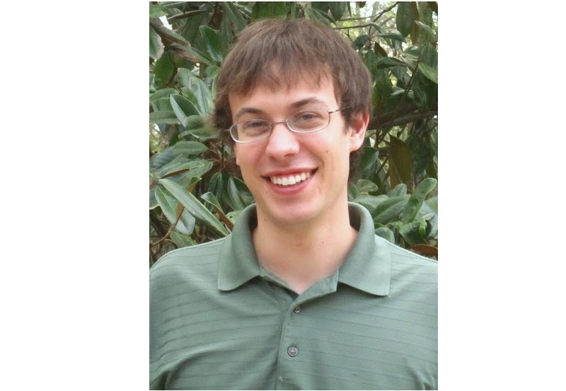

Andrew Peters
About Dr. Peters
Andrew Peters is a Post-Doctoral Fellow at the University of Minnesota with Professor Timothy Lodge. He studies chain exchange and relaxation times in micelle forming triblock systems using simulation and experiment. He earned his doctorate in chemical engineering at the Georgia Institute of Technology with Professor Clifford Henderson, where he investigated diblock copolymer phase separation and directed self-assembly using coarse-grained molecular dynamics models. He earned his bachelor’s degree in chemical engineering from the University of Maryland. See his full C.V. here.
Awards and Honors
- Cover Art Journal of Micro/Nanolithography, MEMS, and MOEMS (2016)
- Featured Article Journal of Micro/Nanolithography, MEMS, and MOEMS (2016)
- Georgia Tech Research and Innovation Conference Fellowship (2012)
- Best Paper at International Symposium on Lithography Extensions (2011)
Selected Publications
- Andrew J. Peters, Timothy P. Lodge; "Comparison of Gel Relaxation Times and End-block Pullout Times in ABA Triblock Copolymer Networks", Macromolecules, 2016, 49, 7340-7349 (doi: 10.1021/acs.macromol.6b01921)
- Andrew J. Peters, Richard A. Lawson, Benjamin D. Nation, Peter J. Ludovice, Clifford L. Henderson; "Calculations of the free energy of dislocation defects in lamellae forming diblock copolymers using thermodynamic integration", J. Micro-Nanolith. Mem., 2016, 15, 023505 (Featured Article) (doi: 10.1117/1.JMM.15.2.023505)
- Andrew J. Peters, Richard A. Lawson, Benjamin D. Nation, Peter J. Ludovice, Clifford L. Henderson; "Coarse-grained molecular dynamics modeling of the kinetics of lamellar block copolymer defect annealing", J. Micro-Nanolith. Mem. , 2016, 15, 013508 (Cover Article) (doi: 10.1117/1.JMM.15.1.013508)
- Andrew J. Peters, Richard A. Lawson, Benjamin D. Nation, Peter J. Ludovice, Clifford L. Henderson; "Simulation study of the effect of molar mass dispersity on domain interfacial roughness in lamellae forming block copolymers for directed self-assembly", Nanotechnology, 2015, 26, 385301 (doi: 10.1088/0957-4484/26/38/385301)
- Andrew J. Peters, Richard A. Lawson, Peter J. Ludovice, Clifford L. Henderson; "Detailed molecular dynamics studies of block copolymer directed self-assembly: Effect of guiding layer properties", J. Vac. Sci. Technol. B, 2013, 31, 06F302 (doi: 10.1116/1.4821652)